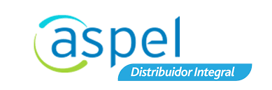
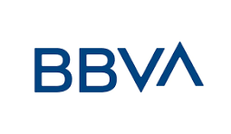
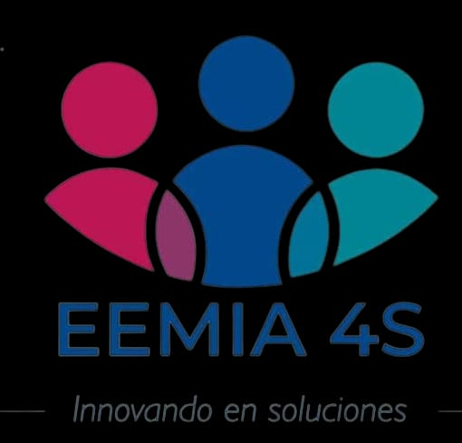

Sobre O&A Consulting Solutions
Somos una firma integral de consultoría con más de 5 años de experiencia, dedicada a brindar soluciones fiscales, administrativas y financieras de alto nivel. Nuestro enfoque se centra en la innovación de resultados para empresas y personas físicas.
MAS O & A: Consulting Solutions O&A, una empresa de consultoría empresarial especializada en el área financiera, fiscal y administrativa aplicada al Businees Intelligence; brindando soluciones estratégicas, asesoramiento y acompañamiento a micros, pequeñas y medianas empresas de todos los sectores.
Nuestro equipo de consultores altamente calificados y con amplia experiencia trabaja en estrecha colaboración con nuestros clientes para identificar oportunidades de crecimiento, optimizar operaciones y superar desafíos empresariales. Nos enorgullece ofrecer soluciones personalizadas y orientadas a resultados que impulsan el éxito a largo plazo de nuestros clientes.
Servicios que Ofrecemos
Misión
Una declaración que explica el propósito fundamental de la organización y cómo contribuye a la sociedad.
Visión
Una declaración que describe el estado futuro deseado de la organización.
Análisis de Datos
° Elaboración de bases de datos °Creación de Dashsboard financiero, ventas, producción,etc. °Interpretación de los dashborad para la toma de decisiones. °Capacitación en el manejo, visualización de datos.
Contabilidad Financiera
Registro de Transacciones: Registrar todas las transacciones financieras de la entidad en libros contables, como diarios y mayores. Clasificación y Codificación: Clasificar y codificar adecuadamente las transacciones para facilitar su seguimiento y análisis. Elaboración de Estados Financieros: Preparar estados financieros como el balance, el estado de resultados y el flujo de efectivo siguiendo los principios contables generalmente aceptados (GAAP) o normativas contables específicas. Cierre de Periodo: Realizar ajustes contables y cerrar los libros al final de cada período contable para preparar los estados financieros. Auditoría Interna: Realizar auditorías internas para garantizar la integridad de los procesos contables y el cumplimiento de políticas y procedimientos. Cumplimiento Normativo: Asegurarse de que la entidad cumpla con todas las normativas contables y fiscales aplicables. Gestión de Activos Fijos: Mantener registros precisos de los activos fijos, su depreciación y amortización. Análisis de Razones Financieras: Calcular y analizar ratios financieros para evaluar el rendimiento y la salud financiera de la entidad. Presentación de Informes Trimestrales y Anuales: Preparar y presentar informes financieros periódicos a la gerencia, accionistas, reguladores y otros interesados. Colaboración con Auditorías Externas: Facilitar auditorías externas proporcionando la información necesaria a auditores independientes. Manejo de Impuestos: Preparar y presentar declaraciones de impuestos de acuerdo con las leyes fiscales aplicables. Gestión de Riesgos Contables: Identificar y gestionar los riesgos contables para evitar errores y fraudes. Implementación de Cambios Contables: Aplicar y comunicar cambios en las normas contables que afecten a la entidad. Capacitación y Desarrollo: Mantenerse actualizado con respecto a cambios en las normativas contables y proporcionar capacitación a los miembros del equipo contable.
Impuestos
Declaraciones de Impuestos: Preparar y presentar las declaraciones de impuestos requeridas por las autoridades fiscales, que pueden incluir impuestos sobre la renta, impuestos a las ventas, entre otros. Planificación Fiscal: Desarrollar estrategias para minimizar la carga fiscal de la empresa de manera legal y ética. Identificar oportunidades fiscales, créditos y deducciones aplicables. Cumplimiento Normativo: Asegurarse de que la empresa cumpla con todas las leyes fiscales y regulaciones locales, regionales y nacionales. Análisis de Legislación Fiscal: Monitorear y analizar los cambios en la legislación fiscal para evaluar su impacto en la empresa y ajustar estrategias en consecuencia. Provisión para Impuestos: Calcular y contabilizar las provisiones para impuestos diferidos y corrientes de acuerdo con los principios contables. Auditoría Fiscal: Preparar la documentación necesaria y colaborar con auditores externos durante auditorías fiscales. Asesoramiento a Otros Departamentos: Brindar asesoramiento a otros departamentos sobre cuestiones fiscales que puedan surgir en el curso de las operaciones de la empresa. Reporte de Impuestos a la Alta Dirección: Informar regularmente a la alta dirección sobre la situación fiscal de la empresa, así como sobre cualquier cambio en la legislación fiscal. Establecimiento de Políticas Fiscales Internas: Desarrollar y mantener políticas internas para garantizar el cumplimiento continuo de las obligaciones fiscales. Evaluación de Riesgos Fiscales: Identificar y evaluar los riesgos fiscales asociados con las actividades de la empresa y desarrollar estrategias de mitigación. Colaboración con Asesores Externos: Trabajar con asesores fiscales externos para obtener orientación especializada y asegurar el cumplimiento normativo. Capacitación del Personal: Proporcionar capacitación al personal de la empresa sobre aspectos fiscales relevantes para sus funciones.
Nómina
Cálculo de Salarios y Beneficios: Calcular las remuneraciones, salarios y beneficios de los empleados de acuerdo con las políticas internas y las leyes laborales vigentes. Deducciones y Retenciones: Calcular y aplicar deducciones obligatorias, retenciones fiscales y contribuciones a la seguridad social. Procesamiento de Pagos: Generar cheques de pago o realizar transferencias electrónicas para depositar los salarios en las cuentas bancarias de los empleados. Cumplimiento Normativo: Garantizar el cumplimiento de las leyes laborales y fiscales relacionadas con la nómina, incluyendo la retención y presentación de impuestos. Gestión de Beneficios: Administrar y gestionar los beneficios proporcionados a los empleados, como seguro de salud, planes de jubilación, vacaciones pagadas y otros. Generación de Informes de Nómina: Crear informes detallados de nómina para la alta dirección y otros departamentos según sea necesario. Auditoría Interna de Nómina: Realizar auditorías internas periódicas para asegurar la precisión y la integridad de los registros de nómina. Cumplimiento con Requisitos de Información: Preparar y presentar informes e información requeridos por las autoridades fiscales y reguladoras.
Proyección Financiera
Planificación Estratégica: Proporcionar una visión anticipada de la situación financiera futura de la empresa, lo que ayuda en la toma de decisiones estratégicas y en la definición de metas y objetivos a largo plazo. Gestión de Recursos: Permitir una asignación eficiente de recursos financieros al anticipar las necesidades financieras y los flujos de efectivo esperados. Toma de Decisiones Informed: Proporcionar información crítica para la toma de decisiones informada, permitiendo a la dirección evaluar el impacto financiero de diferentes escenarios y opciones estratégicas. Evaluación de Riesgos y Oportunidades: Identificar posibles riesgos financieros y oportunidades, permitiendo a la empresa desarrollar estrategias para mitigar riesgos y capitalizar oportunidades. Comunicación con Inversionistas y Stakeholders: Brindar información transparente y confiable a inversores, accionistas y otros stakeholders interesados en la situación financiera futura de la empresa. Negociación con Acreedores: Facilitar la negociación con instituciones financieras y acreedores al proporcionar una visión clara de la capacidad de la empresa para cumplir con sus obligaciones financieras. Medición del Desempeño: Establecer métricas y benchmarks para medir el desempeño real de la empresa en comparación con las expectativas financieras proyectadas. Planificación de Inversiones y Financiamiento: Facilitar la planificación de inversiones y la búsqueda de financiamiento al proporcionar información sobre la capacidad de la empresa para generar flujos de efectivo y su necesidad de capital adicional. Seguimiento de Metas y Objetivos: Evaluar el progreso hacia metas y objetivos financieros establecidos, permitiendo ajustes en la estrategia según sea necesario. Gestión de Flujos de Efectivo: Ayudar en la gestión proactiva de los flujos de efectivo, identificando períodos de posibles excesos o déficits de efectivo. Evaluación de Rentabilidad: Evaluar la rentabilidad esperada de proyectos y operaciones futuras, apoyando la toma de decisiones sobre la viabilidad de inversiones y operaciones comerciales.
Nuestros Servicios Especializados


Filosofía Organizacional
Innovación
Aplicamos procesos y estrategias innovadores que permitan ayudar alcanzar los objetivos deseados.
Sinergia
Trabajando en equipo y acompañandote lograremos juntos nuestros objetivos.
Profesionalismo
Trabajamos con amor, pasión y vocación.
Seguridad
Sabemos lo que te has esforzado y cuidado tu patrimonio, es por ello que deseamos ser parte de tu crecimiento y bienestar.
Familia
Vemos a nuestros clientes como una familia y nos preocupamos por su bienestar y tranquilidad
Negociación
Nos adaptamos a las necesidades de nuestros clientes
¿Cómo trabajamos?
La consultoría basada al BI proporciona una visión objetiva y experiencia especializada para identificar áreas de mejora y oportunidades de crecimiento.
Consultoría
Acompañamos en el Análisis y Estudio micro hasta macroentorno de las empresas, buscando las áreas de oportunidad.
Estrategia
Evaluamos las estrategias correctas sin el menor riesgo, tomando en cuenta las tendencias y la normatividad aplicable.
Acción
Implementamos las herramientas y estratégias correctas para un mejor resultado aplicando el Businees Intelligence.
Dirección y Liderazgo
Nuestra Trayectoria
Años de Experiencia
Conocimiento integral en el sector fiscal y administrativo.
Clientes Felices
Empresas que confían en nuestros resultados diarios.
Oficinas Físicas
Presencia en CDMX y el Estado de México.
Socios Estrategas
Alianzas clave para potenciar tu crecimiento.
Certificaciones y Especializaciones

Certificación Aspel
Sistemas de Gestión

Business Analytics
Estrategia de Datos
Administración ágil de proyectos
Metodologías Agiles
Perfeccionamiento de las TIC’S
Aplicada en los Negocios
Finanzas Corporativas
Análisis Financiero UNAM
Tec de Monterrey
Análisis y Visualización de datos
Áreas de Conocimiento Especializado

Excelencia en Consultoría Integral
"En OA Consulting Solutions, transformamos el conocimiento técnico en resultados estratégicos, brindando soporte especializado en cada pilar fundamental de su organización."

Planeación Estratégica
Proceso sistemático y continuo mediante el cual una organización define su dirección a largo plazo, establece sus objetivos y desarrolla estrategias para alcanzarlos.

Análisis de Datos
Este enfoque implica aplicar diversas técnicas y herramientas estadísticas, matemáticas y computacionales para extraer conocimientos significativos de conjuntos de datos, revelando patrones, tendencias o insights que pueden tener un impacto directo en la eficiencia, la innovación y la toma de decisiones estratégicas dentro de una organización.

Contabilidad Financiera
La contabilidad financiera implica el registro, la clasificación y la interpretación de la información financiera de una entidad con el objetivo de proporcionar informes precisos y comprensibles para usuarios externos, como inversionistas, acreedores, reguladores y otros interesados.

Impuestos
Gestionar y cumplir con las obligaciones fiscales, así como de optimizar la carga tributaria de la organización. Las actividades del área de impuestos pueden variar según la naturaleza y el tamaño de la empresa, así como las leyes fiscales locales.

Nómina
Administrar, elaborar y procesar la remuneración de los empleados, así como de garantizar el cumplimiento de las obligaciones relacionadas con la nómina y los beneficios.

Gobierno Corporativo
Equilibrar los intereses de los diferentes grupos involucrados en una empresa, como la dirección ejecutiva, los accionistas, los empleados, los clientes y la sociedad en general. Este marco proporciona una estructura que promueve la ética empresarial, la gestión eficiente y la mitigación de riesgos, contribuyendo así a la sostenibilidad y el éxito a largo plazo de la organización.

Presupuestación
Planificar, coordinar y controlar los ingresos y egresos relacionadas con la actividad de la empresa y gestionarlos de manera eficiente y efectiva, desarrollando planes financieros detallados que reflejen las metas y objetivos de la organización, asignando los recursos necesarios para su funcionamiento.

Proyección Financiera
Es una herramienta esencial para la gestión empresarial, ya que proporciona una visión anticipada y estructurada del rendimiento financiero futuro, permitiendo a la empresa tomar decisiones informadas y planificar estratégicamente su crecimiento y sostenibilidad a largo plazo.
Nuestros Socios Estratégicos
Sabemos que lo importante es crear alianzas para ofrecer a nuestros clientes el mejor servicio, es por ello que nos emociona compartir algunos de nuestros socios mas importantes.
Despacho Administrativo y Contable MAYA
Aliados expertos en la optimización de procesos administrativos y cumplimiento contable de alta precisión.

Consultoría y Gestoría EEMIA4S S de R.L. de C.V.
Especialistas en soluciones de gestoría empresarial y consultoría legal para la formalización y éxito de negocios.
Presencia Estratégica
Sede CDMX
Av. Insurgentes Centro 1271, Extremadura Insurgentes, Benito Juárez, CDMX.
Ver ubicación exacta →Sede Edo. Méx.
Ecatepec de Morelos, Col. Ciudad Cuauhtémoc (Punto Estratégico).
Abrir en GPS →Contáctanos
Estamos listos para impulsar tu proyecto. Elige el medio de tu preferencia y recibe atención profesional inmediata de nuestro equipo de expertos.